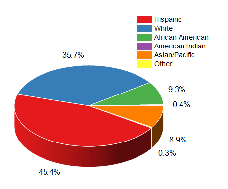

| Island | Species | Mean flipper length (mm) |
|---|---|---|
| Biscoe | Adelie | 188.8 |
| Biscoe | Gentoo | 217.2 |
| Dream | Adelie | 189.7 |
| Dream | Chinstrap | 195.8 |
| Torgersen | Adelie | 191.2 |
Figuring It Out
Figures are Fundamental
Allow us to swiftly convey a message
Easier to compare than numbers
Can capture your audience

Colouring for Colourblindness
Let’s compare some different colour scales:

Contrasting Colours

Contrasting Colours

Contrasting Colours

3D < 2D
3D barcharts? Don’t.
3D piecharts? Don’t.
3D scatterplots? Perhaps…


3D scatterplots

Dual Axes

Dual Axes

Dual Axes

Dual Axes

Cutting Corners

Cutting Corners

Cutting Corners

Cutting Corners

Cutting Corners

Pie Charts

Pie Charts

Pie Charts

Spider/Radar Graphs

Spider/Radar Graphs

Spider/Radar Graphs

Spider/Radar Graphs

Spider/Radar Graphs

Boxplots

Boxplots